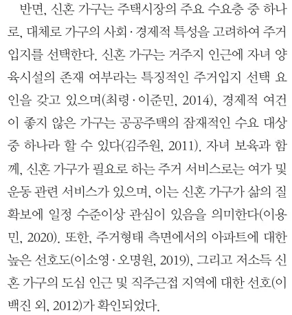
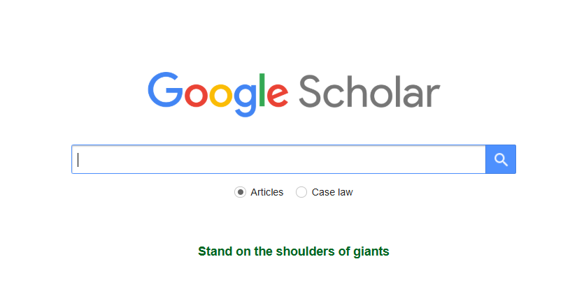
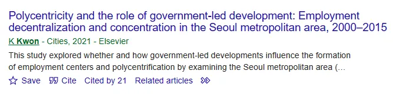
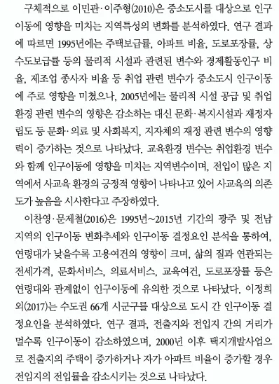

좋은 케이스

1. 논문이란?
1. 논문이란?
1. 논문이란?
1. 연구 질문이 기존 학술적 논의에 의미 있게 기여하는가?
— Desk reject의 결정
2. 연구 질문에 답하기 위한 증거가 충분한가?
— 최종 Accept의 결정
1. 논문이란?
기여도가 높고 낮은 것의 차이가 있을 뿐, 기여가 없는 내용은 없다.
하지만 더 큰 기여를 위해 노력해야 한다.
2. 연구주제 찾기와 질문 만들기
2. 연구주제 찾기와 질문 만들기
2. 연구주제 찾기와 질문 만들기
본인이 발견한 연구공백을 육하원칙(5W1H) 중 하나로 제시
2. 연구주제 찾기와 질문 만들기
본인의 연구질문에 대한 답을 “미리” 내려 검증 가능한 문제(O/X 문제)로 바꾸는 것이다.
3. 선행연구(literature) 검토하기

선행연구는 “학계”에 “발표”된 “연구결과물”을 의미한다.
3. 선행연구(literature) 검토하기

3. 선행연구(literature) 검토하기
가급적 좋은 저널에 실린 논문을 (많이) 읽어라.
3. 선행연구(literature) 검토하기
초보자라면 다음의 방법으로 읽어봅시다.
3. 선행연구(literature) 검토하기
서지정리 프로그램(endnote, Zotero, refworks 등)을 활용하여 목록을 정리한다.
각 논문별 내용은 다음의 기준을 참고하여 나름대로 정리해본다.
3. 선행연구(literature) 검토하기
→ 대주제, 세부주제, 세세부주제 혹은 그 하위단위에서 내 연구는 어디에 있는가?
→ 내 연구는 어떤 측면에서 새로운가? 어떤 점을 기여할 수 있는가?
→ 타 분야 이론의 결합, 관점의 변화, 새로운 데이터나 방법론의 활용
4. 논문 쓰기
일반적인 과학적 논문 쓰기에서
4. 논문 쓰기
서론은 다음과 같이 연구질문 구체화 단계를 그대로 문단으로 옮기는 것이다.
사례
4. 논문 쓰기
1문단: 연구주제에 대한 간략한 동향(연구동향/실제 환경) 및 성과
2문단: 기존 연구가 최근 직면한 한계와 내 연구 세부주제의 중요성
4. 논문 쓰기
3문단: 연구목적, 연구방법 및 요약결론, 연구의 기여 제시
4문단: 이후 논문의 구성
4. 논문 쓰기
선행연구의 목적과 기능은 다음과 같다.
4. 논문 쓰기
좋은 케이스

아쉬운 케이스

4. 논문 쓰기
4. 논문 쓰기
노인의 이동성과 관련한 연구들은 대체로 노인들의 통행패턴이 다른 연령과 차별화된 경향을 보인다는 점을 강조한다. 우선적으로 발견되는 것은 노인의 통행패턴이 청년층(younger adults)이나 장년층(middle-age adults)과 다르다는 것이다(Feng et al., 2013; Figueroa et al., 2014; Cheng et al., 2019). 이는 생애주기에 다른 효과이기도 하지만 코호트 효과, 즉 동질집단 간 경험하는 특성에 따라서도 차이를 보인다(Siren and Haustein, 2013). 생애주기에 비춰보면 노인의 경우 은퇴 등으로 인해 통근통행이 감소하고 그에 따라 재량시간이 증가하면서 비통근통행이 증가한다. 반면 코호트 효과에 따르면 1980년대의 60대와 2000년대의 60대의 통행패턴은 라이프스타일의 차이, 교육수준의 차이 등으로 인해 서로 다른 통행패턴을 보일 수 있다.
노인의 통행패턴 차이는 개인적 차원뿐만 아니라 근린의 생활환경이나 보행환경의 특성, 도시 전체의 공간구조 등 도시 건조 환경이 미치는 영향도 중요하다. (첫 문장에 이어서 이를 보충 - 종합된 내용 혹은 중요한 특정 논문을 가져와 설명)
4. 논문 쓰기
4. 논문 쓰기
4. 논문 쓰기
토론 작성을 위해서는 “선행연구 고찰”이 필수적이다.
4. 논문 쓰기
결론은 전체적인 연구내용을 정리하기 위한 파트이다.
5. 리뷰페이퍼 작성하기
Original research paper vs. Review paper
5. 리뷰페이퍼 작성하기
1. 서술적 리뷰(narrative review)
2. 비판적 리뷰(critical review)
5. 리뷰페이퍼 작성하기
3. 체계적 리뷰(systematic review)
4. 메타분석(meta-analysis)
5. 리뷰페이퍼 작성하기
비판이 적다고 해서 자기 주장이 없는 것은 아니며, 연구자 고유의 종합(synthesis)이 중요
| 유형 | 비판정도 | 문헌추출의 체계성 | 리뷰종합방식 |
|---|---|---|---|
| 서술적 리뷰 | 약함 | 주관적 | 질적 |
| 비판적 리뷰 | 강함 | 주관적 | 질적 |
| 체계적 리뷰 | 약함 | 체계적 | 양적 |
| 메타 분석 | 약함 | 체계적 | 양적 |
5. 리뷰페이퍼 작성하기
비판적 리뷰
체계적 리뷰
메타 분석
5. 리뷰페이퍼 작성하기
서술적/비판적 리뷰
체계적/메타분석
6. 연구윤리
* 연구윤리확보를 위한 지침 제11조
6. 연구윤리
일반적 지식이 아닌 타인의 독창적인 아이디어 또는 창작물을 적절한 출처표시 없이 활용함으로써, 제3자에게 자신의 창작물인 것처럼 인식하게 하는 행위
표절이 되는 경우
6. 연구윤리
1. 타인의 연구내용 전부 또는 일부를 출처를 표시하지 않고 그대로 활용하는 경우
<의심원문>
<선행연구 원문>
→ 해결방안은? 1) 직접인용(따옴표) + 출처표시, 2) 간접인용(paraphrasing) + 출처표시
6. 연구윤리
표절이 되는 경우
<의심원문>
<선행연구 원문>
→ 해결방안은? Paraphrasing + 출처표시
6. 연구윤리
6. 연구윤리
6. 연구윤리
연구내용 또는 결과에 대하여 공헌 또는 기여를 한 사람에게 정당한 이유 없이 저자 자격을 부여하지 않거나, 공헌 또는 기여를 하지 않은 사람에게 감사의 표시 또는 예우 등을 이유로 저자 자격을 부여하는 행위
부당한 저자표시에 해당하는 경우
Authorship을 명확히 설정하는 방법
6. 연구윤리
연구자가 자신의 이전 연구결과와 동일 또는 실질적으로 유사한 저작물을 출처표시 없이 게재한 후, 연구비를 수령하거나 별도의 연구업적으로 인정받는 경우 등 부당한 이익을 얻는 행위
부당한 중복게재인 경우와 아닌 경우
중복게재인 경우
중복게재가 아닌 경우
6. 연구윤리
부당한 중복게재의 일반적 판정 요건
6. 연구윤리
권규상 Kyusang Kwon (kyusang.kwon@chungbuk.ac.kr)